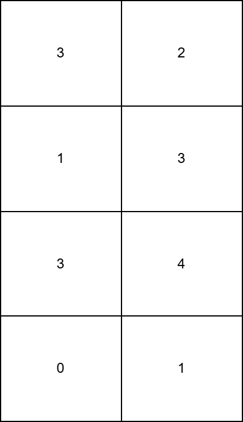
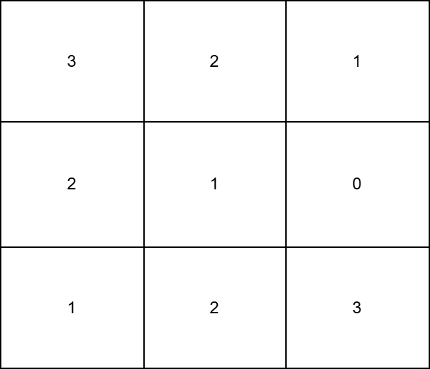

| Category | Difficulty | Likes | Dislikes |
|---|---|---|---|
| Algorithms | Easy | 62 | 5 |
You are given a m x n matrix grid consisting of non-negative integers.
In one operation, you can increment the value of any grid[i][j] by 1.
Return the minimum number of operations needed to make all columns of grid strictly increasing.
Example 1:
Input: grid = [[3,2],[1,3],[3,4],[0,1]]
Output: 15
Explanation:
0th column strictly increasing, we can apply 3 operations on grid[1][0], 2 operations on grid[2][0], and 6 operations on grid[3][0].1st column strictly increasing, we can apply 4 operations on grid[3][1].
Example 2:
Input: grid = [[3,2,1],[2,1,0],[1,2,3]]
Output: 12
Explanation:
0th column strictly increasing, we can apply 2 operations on grid[1][0], and 4 operations on grid[2][0].1st column strictly increasing, we can apply 2 operations on grid[1][1], and 2 operations on grid[2][1].2nd column strictly increasing, we can apply 2 operations on grid[1][2].
Constraints:
m == grid.lengthn == grid[i].length1 <= m, n <= 500 <= grid[i][j] < 2500